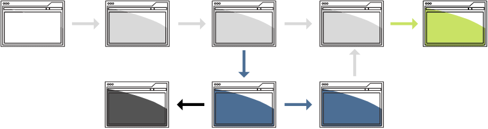

Systèmes d’organisation
Durée de la lecture : 3 minutes
Sur cette page
Structures matricielles

De quoi s’agit-il?
Les structures matricielles sont des réseaux de concepts et de relations interconnectés qui permettent aux utilisateurs d’explorer le contenu selon le parcours qui leur semble pertinent.
Quand les utiliser?
Lorsque le contenu doit être découvert de diverses façons et que les relations sont beaucoup plus fluides, les matrices seraient le meilleur moyen de relier l’information.
Remarque : Dans cette structure, il existe également différentes méthodes de regroupement que vous pouvez utiliser (par ordre alphabétique, temporel, par format ou par sujet, etc.).
Quand faut-il faire attention?
Les structures matricielles sont les plus difficiles à bien concevoir. Des chemins interconnectés doivent être créés grâce à un travail rigoureux à l’aide d’hypertextes et de métadonnées.
Bien que ces voies puissent être construites par le biais d’un étiquetage social (externalisation ouverte) ou formel, pour être efficaces et durables, les structures matricielles devraient commencer par une modélisation efficace du contenu (disponible en anglais seulement).
Exemples
Sur Canada.ca, le contenu fiscal est structuré sous Canada.ca > Impôts. Cependant, d’autres sections de Canada.ca sont reliées au contenu fiscal, au besoin. Cela comprend :
- Canada.ca > Argent et finances > Financement des études > (lien vers le contenu fiscal du REEE)
- Canada.ca > Prestations > Prestations d'invalidité > (lien vers le contenu fiscal de la Prestation pour enfants handicapés)
- Canada.ca > Entreprises et industrie > (lien vers Taxes et impôts des entreprises)
- Canada.ca > Ministères et organismes > Agence du revenu du Canada > (lien vers Impôts)
Structures séquentielles
De quoi s’agit-il?
Les structures séquentielles guident les utilisateurs à travers un processus étape par étape.
Quand les utiliser?
Les structures séquentielles visent à montrer un processus précis, comme faire un achat ou suivre un cours en ligne.
Exemple : Introduction > Chapitre 1 > Chapitre 2 > Résumé
Cette approche pourrait convenir à des tâches bien définies et ayant un objectif clair pour l’utilisateur.
Remarque : Dans cette structure, il existe également différentes méthodes de regroupement que vous pouvez utiliser (par ordre alphabétique, temporel, par format ou par sujet, etc.).
Quand faut-il faire attention?
C’est exaspérant lorsqu’il manque des étapes à un processus ou lorsque des sources d’information concurrentes sont contradictoires. Avant de concevoir une séquence, effectuez une vérification approfondie du contenu (disponible en anglais seulement) et identifiez le contenu qui devra être fusionné et retravaillé pour créer une séquence unique, complète et logique.
Exemples
- Inscription à un compte
- Réponse à un sondage
- Présentation d’une demande
- Paiement en ligne
Structures hiérarchiques

De quoi s’agit-il?
Les structures hiérarchiques regroupent l’information dans des catégories plus larges, puis plus étroites, où il n’y a pas d’interconnectivité entre les catégories.
Quand les utiliser?
Imaginez un organigramme, un arbre généalogique, un menu dans un restaurant ou une liste d’épicerie avec différentes catégories d’aliments et des articles spécifiques en dessous.
Exemple : Fruits et légumes frais > légumes > légumes-feuilles > épinards
Différents niveaux d’information transmettent l’importance par le biais de relations descendantes. Elles illustrent aussi efficacement l’ensemble et ses parties.
Remarque : Dans cette structure, il existe également différentes méthodes de regroupement que vous pouvez utiliser (par ordre alphabétique, temporel, par format ou par sujet, etc.).
Quand faut-il faire attention?
Bien que ce type de structure soit souvent facile à construire et à lire, elle ne fonctionne pas bien pour de l’information pleine de relations et de nuances complexes et interreliées.
Un autre risque élevé consiste à regrouper l’information en utilisant un langage et une structure familiers à l’organisation, mais non aux utilisateurs (ce que Richard Saul Wurman appelle la maladie de la familiarité (disponible en anglais seulement)) . Cela peut faire en sorte que les citoyens ne sont pas en mesure d’obtenir l’information dont ils ont besoin et que le gouvernement doit dépenser davantage pour les appels de soutien en raison de la dette liée au contenu (disponible en anglais seulement).
Exemples
- Organigramme
- Localisateur de magasins ou de bureaux
Toutes les sections du cours
- Date de modification :